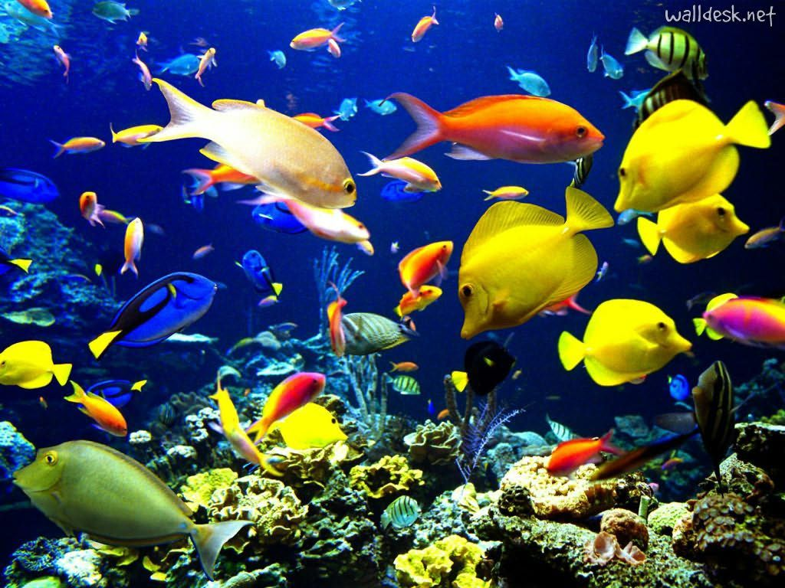
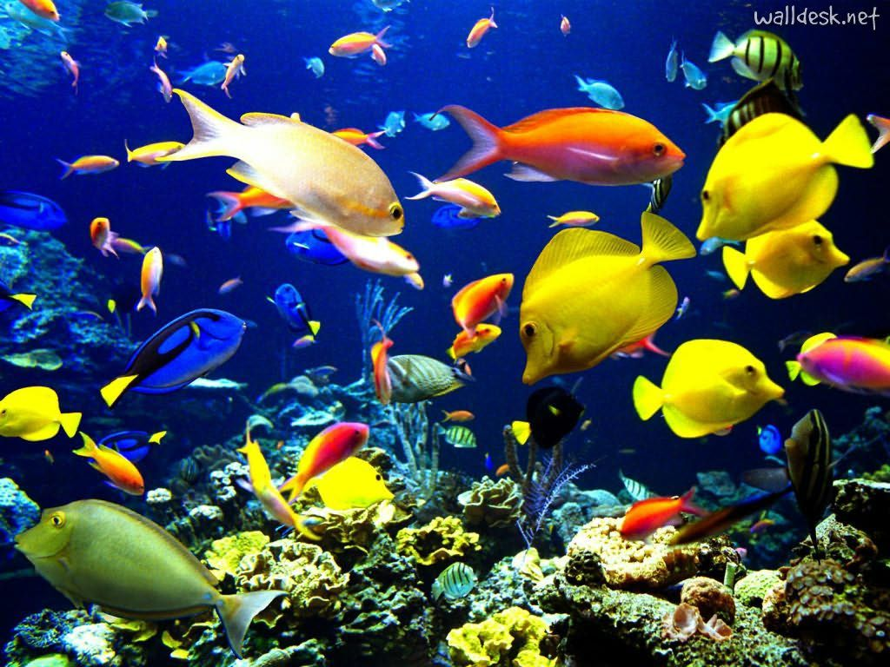

Características:
Os peixes são encontrados nos mais variados ambientes aquáticos e caracterizam-se por ser o grupo mais numeroso e diversificado nos vertebrados. Nesse grupo de animais, temos representantes com corpo tipicamente fusiforme; respiração, geralmente, do tipo branquial; presença de nadadeiras; e ectotermia.
Classes:
- Peixes cartilaginosos
- Peixes ósseos